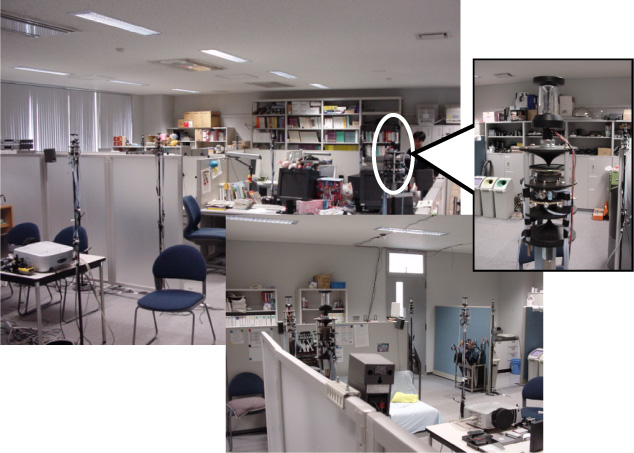
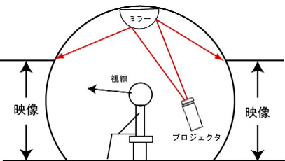
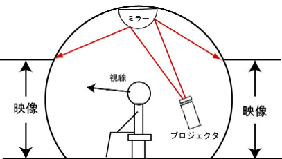

１．タウンデジタイジング
リアリティの高い街の3次元モデルを数日間の内に作るにはどうすればよいか．この問いに答え，新たな仮想空間構築方法を提供するのが Town Digitizingである．３次元幾何モデルに基づく従来のモデリング手法は，建造物の多い近代的な都市空間を再現するのに適している．しかしながら，モデル計測に多くの労力を要し，複雑な形状を持つ物体をモデル化することが難しい．一方，Town Digitizing は，図１で示す全方位カメラを用いて，一定間隔でデジタル画像を撮像するだけで，写実性のある仮想環境を構築できる．


図１．全方位カメラと全方位画像 図２．ズーミングステレオ
Town Digitizing は，全方位画像間を滑らかにつなぐ実時間の補間処理により，街全体の Walkthrough 環境を実現している．この補間処理は，2枚の全方位画像を結ぶ直線に沿って，映像の拡大率を変化させることである．その補間処理の様子を示したのが，図２である．このように，一対の全方位画像を撮影した地点間の距離を拡大率により表現することをズーミングステレオ技術と呼ぶ．この補間処理を実現するために必要となるパラメータは，隣接する一対の全方位画像間が持つFOE制約を利用することにより，自動的に推定することが可能である．
Town Digitizing に基づき，我々は，広範囲な環境に対して，誰もが簡単にWalkthrough 環境を構築し，その利用を可能とするソフトウェア，TDEditor（図３）とTDViewer（図４） を開発した．TDEditorは，撮影経路と撮影した全方位画像を関連付けるだけで，自動的にWalkthrough環境を実現するためのパラメータ推定を行う．そして，TDViewerを介して，ユーザがWalkthrough環境を利用する．
２．分散全方位視覚システム
分散全方位視覚システム（図５）とは，多数の全方位カメラを用いた視覚システムである．このシステムは，視野の広い全方位カメラを用いることによって，少ないカメラでより広い範囲を観測できる．環境中の物体を複数の全方位カメラでさまざまな方向から同時に観測できるため，非常に頑強な処理や認識が可能となる．これらの特徴を利用し，基本技術として，カメラや物体の同定・位置決め手法を確立した．また，既に実現されている実時間でロバストに追跡可能な実時間人間追跡システムを基に，ネットワークに繋がれた多数のカメラに対応できるように拡張した．さらに，物体や人物の動きを周囲360度から観測した複数方向の時系列データからなるVAMBAM（View And Motion-Based Aspect Model）を組み合わせることにより，ロバストで実時間性を持つ，人間の行動（ジェスチャ）を認識するシステムを構築した．図６は，複数の人間が同時に存在する状況下において，人間同士の相互作用である雑談や挨拶などのようなジェスチャを認識している様子を示している．

図５．分散全方位視覚システム 図６．ジェスチャ認識システム
さらに，新たな知能の概念として，環境に宿る知能の実現を目指している．この環境知能を構成論的アプローチに基づいて実現するために，人間の行動要素を可能な限りモデル化した行動辞書を作成し，分散全方位視覚環境における人間の日常生活行動の認識システムを構築している．この行動要素のモデル化手法として画像を決定木により分類する手法を確立するとともに，カメラから得られる映像情報を高次元な特徴空間に写像し，パターン認識技術を利用することにより，人間の日常生活における群行動認識を確立した．
３．全方位ディスプレイ
没入型ディスプレイ（Immersive Display）は，ユーザの周囲を映像で覆う事によって高い臨場感を実現する装置である．多面体ディスプレイ，ドーム型ディスプレイなど，様々な形状のディスプレイを開発した． 360度の視野を持つ全方位画像を投影し，普段我々が生活している現実空間に近い空間を再現する表示装置として，Personal Omnidirectional Visualizer（POV）と呼ぶ全方位ディスプレイ（図７）を開発した．全方位ディスプレイの特徴は，構成機器がFRP製球面スクリーン，ステンレス製半球ミラー，プロジェクタと計算機のみであり，従来の没入型ディスプレイと比較して，コスト及びスペースに利点を持つことである．プロジェクタは閲覧者の背後に上向きに設置され，閲覧者頭上に固定された半球ミラーへ投影する．そして，ミラーにより反射された投影光は球面スクリーンの内面に映し出される（図８）．このシステムでは，投影する全方位画像情報と球面スクリーンとの位置関係が，レイトレーシング技術により予め明らかにされている．この位置関係に基づき，計算機上で画像情報が補正され，球面スクリーンに対し常に歪のない映像が投影される．
 

図７．全方位ディスプレイ 図８．全方位ディスプレイ模式図
文献：
Takushi Sogo and Hiroshi Ishiguro and Mohan M. Trivedi. Real-Time Target Localization and Tracking by N-ocular Stereo. IEEE Workshop on Omnidirectional Vision, pp.153-160, 2000.
小泉智史, 石黒浩. Town Digitizing 技術. 映像情報インダストリアル, Vol.34, No.1, 2002.
Satoshi Koizumi and Hiroshi Ishiguro. Town Digitizing: Omnidirectional Image-Based Virtual Space. International Workshop on Digital Cities, Part 1, pp.19-30, 2003.
Karl MacDorman, Hiroshi Nobuta, Tetsushi Ikeda, Satoshi Koizumi and Hiroshi Ishiguro. A Memory-Based Distributed Vision System that Employs a Form of Attention to Recognize Group Activity at a Subway Station. IEEE/RSJ Conference on Intelligent Robots and Systems, 2004.
連絡先：
大阪大学大学院工学研究科 石黒浩 ishiguro at ams.eng.osaka-u.ac.jp
科学技術振興機構 デジタルシティ研究センター 小泉智史 satoshi at digitalcity.jst.go.jp